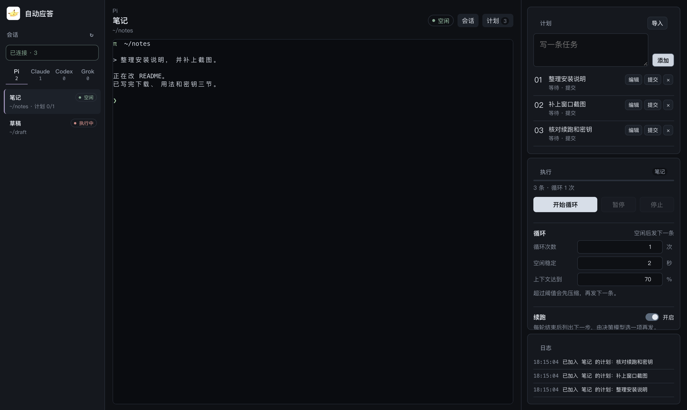
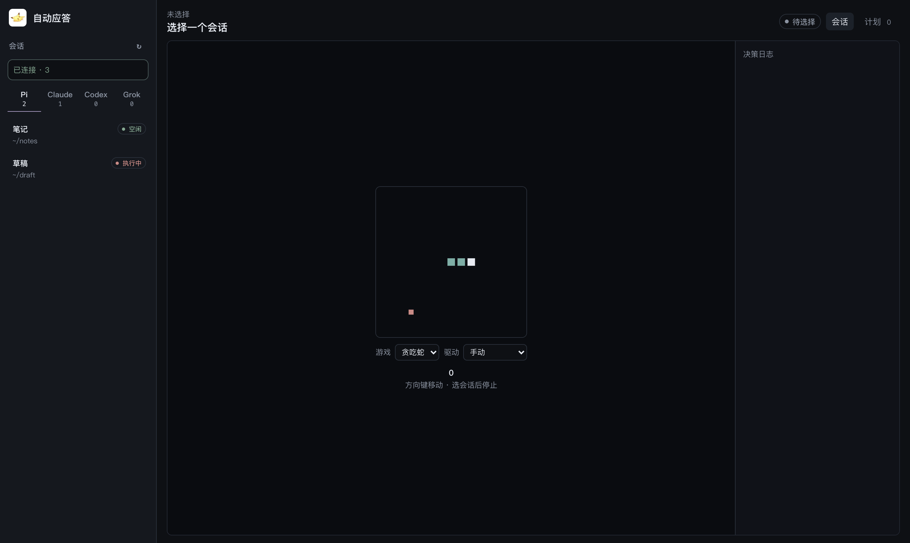
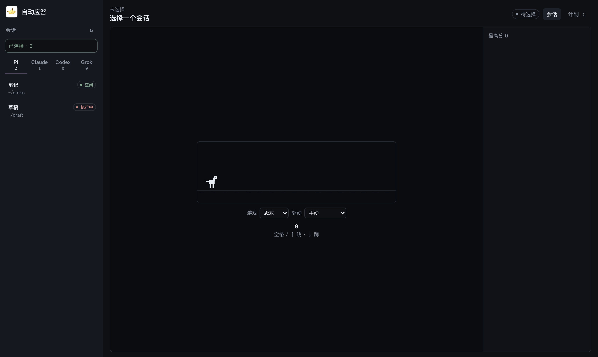
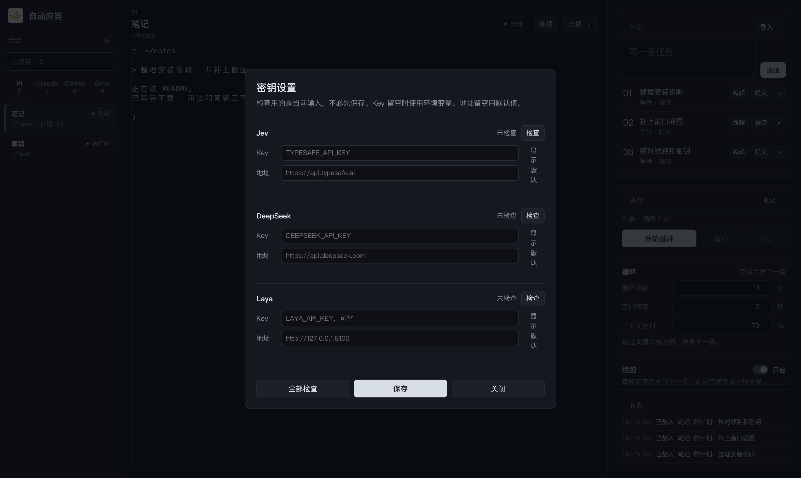

终端
选中 pane 后可以直接输入。滚轮翻的是 Herdr 历史，中文不会拆成乱码。接入失败只记错误，不退回旧预览。
macOS · 只连接 Herdr pane
读 Pi、Claude、Codex、Grok 的终端，看 idle / working。选中后可以直接输入，滚轮翻历史。计划绑在当前窗口上，换会话不会把任务带走。
安装包未签名。首次请右键 App，选择「打开」。

贪吃蛇和恐龙的驱动分开记。蛇可以交给 Jev 或 Laya，收到决策才走。恐龙可以交给 Laya，按实时距离决定跑、跳或蹲，游戏不会停。


选中 pane 后可以直接输入。滚轮翻的是 Herdr 历史，中文不会拆成乱码。接入失败只记错误，不退回旧预览。
写一条、导入，或改待执行的任务。正在执行和已完成的不能改。计划只属于当前窗口。
空闲稳定后发下一条。可设次数、空闲秒数，以及上下文百分比。超过阈值会先压缩。
循环中若 5 分钟内终端变化不到 1%，且不是 idle，会输入「继续」。
每轮结束后列出下一步，由决策模型选一项再发。置信不够或选择停止，就不再续。
任务和续跑都结束后，单独再发一轮 git commit。不 push。
⌘ , 打开密钥设置。检查用的是当前输入，不必先保存。Key 留空用环境变量，地址留空用默认值。Laya 同一时间只发一个决策。

| 决策 | 默认地址 | 环境变量 |
|---|---|---|
| Jev | api.typesafe.ai | TYPESAFE_API_KEY |
| DeepSeek | api.deepseek.com | DEEPSEEK_API_KEY |
| Laya | 127.0.0.1:8100 | LAYA_API_KEY，可空 |
~/.config/herdr/herdr.sock。关闭窗口会退出应用，不留在后台。安装包未签名，首次请右键选择「打开」。